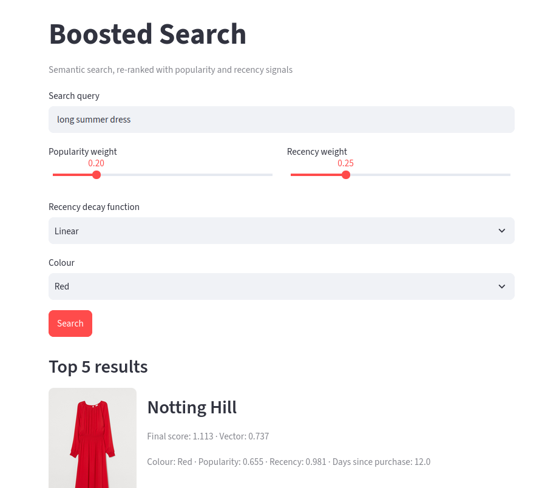

One dataset, two very different kinds of field.
Rather than build a demo dataset from nothing, we use a real H&M product catalogue already indexed in Qdrant — and split its fields by the job each one does.
01Reuse, don't reinvent
For a prototype, 100k items, use the existing H&M product dataset, already embedded and already loaded into a Qdrant collection, complete with the business fields a real storefront would track.
Every point in the collection looks like this:
{
// vector: dense embedding of image + description (not shown)
"article_id": 108775015,
"product_code": 108775,
"name": "Strap top",
"product_type": "Vest top",
"product_group": "Garment Upper body",
"colour": "Black",
"department": "Jersey Basic",
"section": "Womens Everyday Basics",
"description": "Jersey top with narrow shoulder straps.",
"image_url": "http://localhost:8000/images/010/0108775015.jpg",
"popularity": 0.8582665082229252,
"recency": 0.9154160982264664,
"last_purchase_date": "2020-07-22T00:00:00Z"
}02Vector data vs. payload data
Every field in that point falls into one of two buckets, and the whole video hinges on keeping them separate:
What the item means
The dense embedding — built from the product image and description — is what makes semantic search possible. It answers "how close is this to the query?" and nothing else.
What the business knows
popularity, recency, colour and friends carry no semantic meaning by themselves — they're structured facts Qdrant stores alongside the vector and can filter or score on directly.
Two payload fields do the heavy lifting for ranking in this dataset:
popularity
A precomputed value in [0, 1] summarising how much an item has sold or been engaged with. Higher is more popular.
recency
Also precomputed to [0, 1], where 1.0 means "most recently purchased." Derived from last_purchase_date ahead of time so the ranking formula never has to do date math itself.
colour plays a third, different role: rather than contributing to the score, it's used as a hard filter — narrow the candidate set to "Red" before ranking even starts, rather than scoring redness.
03Seeing it in the demo
The app, "Boosted Search", exposes exactly this split: a query box for the vector side, plus sliders and a colour filter for the payload side.
